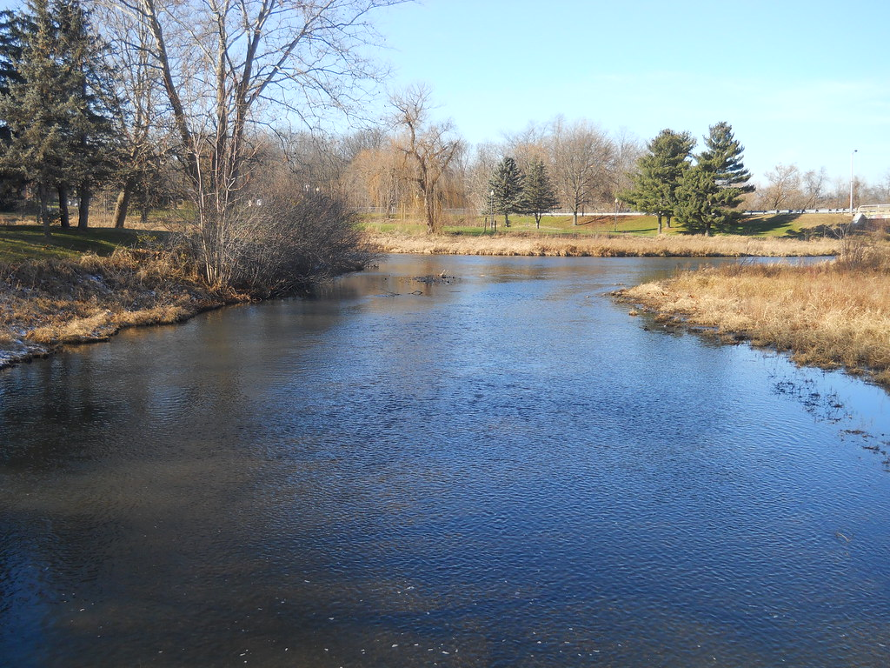

Waterways in Nature
Rivers bring life... Healthy rivers sustain ecosystems and strengthen local communities.
Many local parks include streams or ponds. Sitting by the water can be peaceful, while activities like kayaking and fishing make rivers a source of recreation.
Conserving waterways is critical for the future. Pollution and overuse threaten fresh water around the world. Protecting rivers means protecting communities.
Share Your Experience
Image source: Flickr Creative Commons